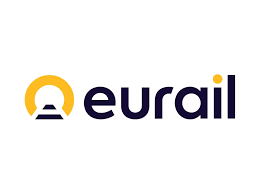

Experience

Customer Success & Marketing Specialist
Porto (June 2024 - April 2025)
- Collaborated with the marketing team to develop data-driven promotional strategies using HubSpot, leading to a 25% increase in customer retention across all regions.
- Executed bulk messaging campaigns targeting 10,000+ clients, driving a 15% uplift in player engagement and a 10% increase in deposits.
- Oversaw player engagement and retention initiatives, contributing to a 20% overall growth in customer lifetime value across Asian, African, and Brazilian markets.
- Handled over 100 customer inquiries daily via chat for iGaming platforms like Bet365, Bet Barter, Aposta Real, and Sky247, ensuring timely resolution of betting issues and account management.
- Monitored and escalated complex bet disputes to RFBA, CRM, or OPS teams using 9 Wickets, achieving a 95% resolution rate within 24 hours.
- Assisted over 300 clients monthly with account registrations, deposits, and withdrawals, contributing to a seamless user experience across Asian, African, and Brazilian markets.
- Managed a portfolio of 150+ VIP customers, conducting telemarketing campaigns that resulted in a 20% increase in high-value customer engagement.
- Promoted new bonuses and offers, leading to the reactivation of 30% of dormant VIP accounts across targeted regions.

Business Development Manager
National Chromatography Inco, Europe (Oct 2022 - May 2024)
- Acquired consistent new business with well-formulated and executed strategies based on market expertise.
- Collaborated with sales and business development teams to fulfill bids, RFP, and tender under strict timelines.
- Contributed to bottom line revenue by attaining 80% of sales quota.
- Revitalized marketing efforts employing streamlined processes and rebranding initiatives.
- Prospected and qualified marketing leads from the pharmaceutical industry using Salesforce CRM attaining conversion rates of 13%.
- Amplified international sales by selling pharmaceutical stocks worth $35k across North America and South Asia.
- Liaised with directors, R&D team, sales and procurement team, dispatch and management teams through weekly and monthly meetings.

Client Relationship Specialist
Eurail, Netherlands (Sept 2022 - Aug 2023)
- Addressed customer inquiries through phone, email, and chat channels.
- Diagnosed and troubleshooted customer problems while delivering technical assistance.
- Monitored and escalated complex bet disputes to RFBA, CRM, or OPS teams using 9 Wickets.
- Assisted over 300 clients monthly with account registrations, deposits, and withdrawals.
- Managed a portfolio of 150+ VIP customers, conducting telemarketing campaigns that resulted in a 20% increase in high-value customer engagement.
- Promoted new bonuses and offers, leading to the reactivation of 30% of dormant VIP accounts across targeted regions.

Environmental Assistant
MGK Aqua Inco, India (Nov 2020 – Aug 2021)
- Developed Detailed Project Reports (DPRs) on sustainability, climate change, GHG management, and energy efficiency for BOSCH, PepsiCo, and multiple textile and tanning companies.
- Led water treatment initiatives for 15+ residential and corporate projects by analyzing BOD, DO, TSS, and other parameters, and implementing clarifiers, rainwater harvesting, and automated wastewater treatment systems.
- Designed coagulant/flocculant specifications and supported the installation of drinking water setups, acoustic blowers, and ETPs, resolving on-site issues to ensure timely project completion.
- Conducted waste management training during corporate/public events and utilized Agile/Kanban methods for sales tracking and stakeholder engagement.

Project Assistant
UNICEF, Water Sanitation and Hygiene (WASH), India (Jul 2018 - Jun 2019)
- Collaborated with government officials to report progress and negotiate budgets for environmental sustainability and GHG management projects, including solar stove and water pump installations.
- Researched, drafted, and edited proposals and executive reports, identifying opportunities to enhance project outcomes. Streamlined water testing by analyzing 63 parameters and integrated solar-powered stoves for over 10,000 tea estate residents, encouraging alternatives to conventional coal and scrapwood cooking.
- Modernized the preliminary designs for water pumps and beddings in 16 tea estates across Dibrugarh, Assam, providing access to fresh water and usage of honeycomb toilets for efficient use and cost saving.

Sustainability Consultant
Freelance, Porto (2024 - 2025)
- Advised startups on integrating sustainability metrics into their business models and reporting
- Developed ESG strategy playbooks for clients in energy and e-mobility
- Worked with teams to improve carbon accounting and climate reporting transparency
- Organized workshops on climate innovation and sustainable business practices